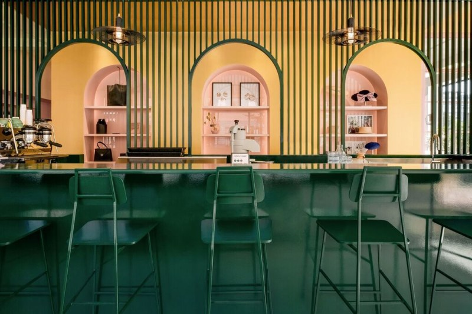
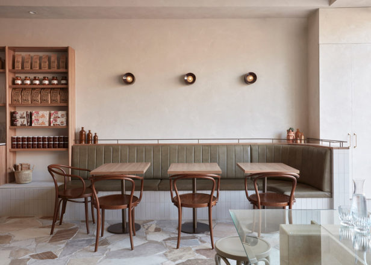
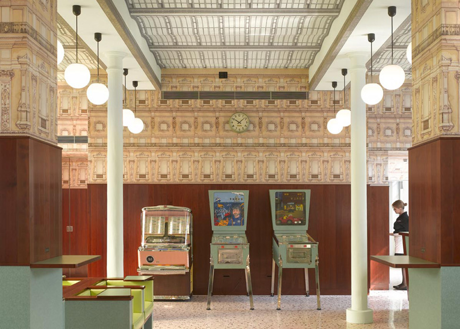

THE CUBAN
 For a nolstalgic trip through time and space, meet The Cuban. Walk through the beaded curtains and in an instant, the scent of coffee beans and exotic flowers that once were will engulf your memories. Take your caffeine hit with a side of cigar.
DIRECTIONS: Take a left down paradise cove.
QUEEN SHEILA'S TARTS

Regal yet contemporary, kings and queens from all paths of life rejoice their hedonistic ways here - including the odd celebrity appearance. Queen Sheila herself, however, is still the centre of conspiracy with many in the gardens questioning her existence over hot cups of java.
DIRECTIONS: Behind the first wall of wonder.
FRANK'S
Frank's is, quite frankly, like sitting in your grandmothers bunker - coffee by the filter, table by the stove, cats by the dozen.
DIRECTIONS: Speak to Frank's dog on the edge of Dystopia Lane for the portal to reveal itself.
BACKGAMMON GAMMONS
Fan of chess, arcade games and gambling your hard earned golden nuggets away? For members only, but once a gammon always a gammon.
DIRECTIONS: Swim through the Lava Whirlpools on a high tide.